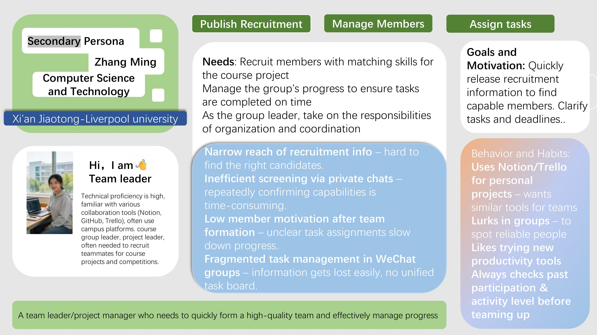

About the Project
This project explores playful and human-centric ways to support group discussions at XJTLU. Our target users include XJTLU students. The system is intended for mobile and PC use in onsite discussion contexts.
Group discussion is an important part of university learning. It affects participation, confidence, communication, and collaboration. However, current discussion activities may still involve problems such as unequal participation, unclear structure, awkward silences, and limited support for teachers to monitor group progress.
Based on our early research and ideation, we identified several key issues in XJTLU group discussions: some students feel nervous when speaking at the beginning, some are easily distracted, some struggle to follow the key content, participation is often unbalanced, and there is limited support for review and reflection after the discussion.
This project mainly involves XJTLU students, language teachers, and academic teachers, and the project is intended for mobile or PC use in an onsite context.
Group Members

Zhaoguang Hu
Student ID: 2257688

Haoyu Chen
Student ID: 2361801

Yihan Shen
Student ID: 2362075

Panyi Qin
Student ID: 2362163
Research & Gap Analysis
To understand the discussion challenges more clearly, we reviewed both academic papers and existing collaboration products. This helped us identify what current solutions do well and what they still fail to support in classroom group discussion.
Academic Research
- Cooperative Learning in Higher Education – highlights the value of structured roles and accountability in group work.
- Discussion as a Way of Teaching – emphasizes democratic participation and psychological safety in discussion.
- The Power of Peer Discussion – shows how peer explanation supports learning and conceptual understanding.
- Active Learning in Science & Engineering – provides evidence that active participation improves student performance.
Commercial Product Analysis
- Slack – strong for communication history, but lacks pedagogical scaffolding.
- Miro – strong for visual collaboration, but can become cluttered in discussion-heavy tasks.
- Padlet – easy to use, but limited for deeper structured discussion.
- Gather.town – engaging and playful, but weak in persistent discussion documentation.
Brainstorming & Ideation
We first identified the main pain points in student group discussions, and then explored a wide range of early concepts through brainstorming and Crazy Eights.
Key Problems Identified
- Some students feel nervous and hesitate to speak at the beginning.
- Students are easily distracted during discussion.
- Students struggle to follow key discussion content.
- Participation is often unbalanced.
- There is little support for review and reflection after discussion.
Crazy Eights Concepts
- Mobile Quick-Prompt
- Role Roulette
- Sentiment Heatmap
- AI Scribe
- Peer Feedback Portal
- Visual Scaffolding
- Equality Tracker
- AR Overlay
User Personas
To better understand our target users, we created personas based on the challenges students may face during XJTLU group discussions. These personas help us identify user goals, frustrations, and design opportunities.

Persona 1 – Ethan
Age: 23
Role: College student from XJTLU
Location: Suzhou, Jiangsu
Character: Introverted, easily distracted, poor comprehension
Bio
Ethan is a junior at XJTLU majoring in Information and Computing Science. He is often afraid to express his opinions during group discussions. He is also easily distracted by notifications and online information, which makes it difficult for him to stay focused and understand the key content of each discussion.
Goals
- Discuss in a relaxed atmosphere
- Maintain focus in collaborative work
- Complete group tasks without holding back teammates
- Catch up with group progress easily
Frustrations
- Gets easily distracted during teamwork
- Often forgets key points after discussions
- Afraid to express ideas in front of teammates
Needs
- An AI assistant to summarise key points from discussions
- A more relaxed discussion atmosphere
- A distraction-free interface to help him stay focused
Design Implications
- The system should reduce distraction during group discussion.
- The interface should support shy users in expressing ideas more comfortably.
- The system should help users summarise and review key discussion points.

Persona 2 - Zhang Ming
Major: Computer Science and Technology
University: Xi'an Jiaotong-Liverpool University
Role: Team leader / project manager
Profile: High technical proficiency, familiar with collaboration tools, often responsible for recruiting teammates and coordinating group work.
Bio
Zhang Ming is a student team leader who often takes responsibility for organizing course projects and competitions. He is highly familiar with collaboration tools such as Notion, GitHub, and Trello, and he frequently uses campus platforms to coordinate team activities. His main challenge is not participating in discussion itself, but quickly forming a strong team and managing members effectively after the team is created.
Goals and Motivation
- Quickly publish recruitment information to find capable members
- Recruit members with matching skills for the course project
- Clarify tasks and deadlines clearly
- Manage the group's progress to ensure work is completed on time
- Take responsibility for organization and coordination as a team leader
Frustrations
- Narrow reach of recruitment information makes it hard to find suitable candidates
- Screening members through private chats is inefficient and repetitive
- Low member motivation after team formation slows down progress
- Task management in WeChat groups is fragmented and information is easily lost
Behavior and Habits
- Uses Notion and Trello for personal projects and wants similar tools for teams
- Lurks in group chats to spot reliable people
- Likes trying new productivity tools
- Always checks past participation and activity level before teaming up
Needs
- A more efficient way to publish recruitment information
- Better support for identifying members with matching skills
- A clear task board for assigning responsibilities and deadlines
- A centralized tool to manage team progress and communication
Design Implications
- The system should support fast and targeted member recruitment.
- The interface should reduce repetitive screening work for team leaders.
- The system should make task assignment and deadlines more visible.
- The platform should centralize collaboration instead of relying on fragmented chat tools.
User Journey Map
Scenario: Participating in an in-class XJTLU group discussion for coursework
Goal: To understand the task clearly, participate comfortably, stay focused, and complete the group task successfully.
The journey map helped us identify the most critical emotional low points, especially at the start of the discussion, during moments of distraction, and after the session when reflection support is missing.
| Stage | Actions | Thoughts | Emotions | Pain Points | Opportunities |
|---|---|---|---|---|---|
| Before the discussion | The student reads the task, listens to the teacher’s instructions, and joins a discussion group. |
“Do I understand the task clearly?” “Will I be able to contribute?” |
Uncertain, slightly nervous | The discussion goal may not be clear enough at the start. Some students may already feel pressure before speaking. | Provide a clearer task overview, simple objectives, and preparation support before the discussion begins. |
| Starting the discussion | The student looks at teammates, waits for someone to speak first, and listens to the opening conversation. |
“Should I speak now, or wait?” “What if my idea is not good enough?” |
Awkward, hesitant, pressured | Quiet or less confident students may struggle to join the conversation naturally. | Add ice-breakers, turn-taking support, or speaking prompts to reduce awkwardness at the beginning. |
| During the discussion | The student listens, responds, shares ideas, and tries to follow the group’s progress. |
“What is the main point now?” “I think I missed something.” |
Engaged but also stressed or confused | Fast discussion, interruptions, and distractions make it difficult for some students to stay focused and understand the key points. Unequal participation may also appear. | Support real-time key-point tracking, structured discussion flow, and a cleaner, less distracting interaction design. |
| Finishing the discussion | The student helps summarise ideas or listens while others organise the final answer. |
“Have we answered the task properly?” “Did I contribute enough?” |
Uncertain, reflective | Some students may not fully understand the final result or may feel their contribution was limited. | Provide a shared summary, visible group decisions, and clearer task completion structure. |
| After the discussion | The student reflects on the teamwork experience and the final output. |
“What did we actually conclude?” “How could I do better next time?” |
Reflective, sometimes disappointed | There is often little support for review, feedback, or post-discussion reflection. | Add review notes, discussion summaries, and reflective feedback to help students improve over time. |
Journey Stages
- Before the discussion: The student reads the task and listens to instructions, but may already feel uncertain about the discussion goal.
- Starting the discussion: The student waits for others to speak first and may hesitate to join the conversation.
- During the discussion: The student tries to listen, respond, and contribute, but may struggle with focus, comprehension, or unequal participation.
- Finishing the discussion: The student helps organise the final answer or listens while others summarise.
- After the discussion: The student reflects on the teamwork experience and may want clearer review and feedback.
Key Pain Points
- Unclear task structure at the beginning
- Low confidence when joining discussion
- Difficulty staying focused and following key points
- Unequal participation during teamwork
- Lack of review and reflection support afterwards
Design Opportunities
- Clearer task guidance
- Low-pressure participation support
- Real-time discussion summary
- A distraction-free interface
- Post-discussion reflection tools
Design Alternatives
Before deciding on our final solution, we compared several broader design directions for supporting group discussion.
AI-First Automated Assistant
A system that uses AI to lead and moderate the discussion automatically.
Pros: high efficiency, consistent moderation, low effort for students.
Cons: reduces critical thinking, feels robotic, may weaken natural discussion.
Gamified Engagement Platform
A system based on points, badges, and incentives to increase participation.
Pros: engaging, motivating, fun and visible.
Cons: may lead to superficial participation and over-competition.
Human-Centered Scaffolding Tool (Chosen)
A system that supports students with prompts, lightweight structure, and reflection tools while keeping them in control of the discussion.
Pros: encourages critical thinking, democratic participation, and adaptability.
Cons: requires more effort from students and depends on group motivation.
Final Design Concept
After comparing different directions, we refined our final concept into three main interaction mechanisms.
Prompt Words
Real time Agree Against Feedback
AI Summary and Decision Tree Playback
Prototype Evolution
Low-Fidelity Exploration
We started with quick sketches and early concepts such as prompts, role tools, heatmaps, and AI-supported discussion aids.
Mid-Fidelity Refinement
We then narrowed these ideas into more focused interaction concepts that better matched the identified pain points in real classroom discussions.
High-Fidelity Prototype
Our current prototype focuses on three core interactions: low-threshold initiation, dynamic discussion guidance, and reflective playback after discussion.
Early Evaluation
We carried out early feedback collection on the current concept to understand how well it addresses speaking anxiety, focus, and reflection in group discussions.
Initial Findings
- The low-threshold initiation idea was seen as helpful for shy students.
- The visual structure of the discussion was considered useful for re-focusing attention.
- The reflective playback concept showed potential for supporting post-discussion review.
Next Steps
In the next stage, we plan to test the prototype further with more users and refine the interaction details based on feedback.
Progress Log
- Week 1-2: Formed the group, confirmed the project topic, and initialized the GitHub portfolio.
- Week 3: Identified the main challenges in XJTLU group discussions.
- Week 4: Developed two personas and completed a user journey map.
- Week 5: Reviewed academic papers and existing collaboration products to identify research gaps.
- Week 6: Created Crazy Eights concepts and compared alternative design directions.
- Week 7: Refined the final concept into three key interaction mechanisms.
- Week 8: Produced the poster, refined the prototype, and summarized early evaluation findings.